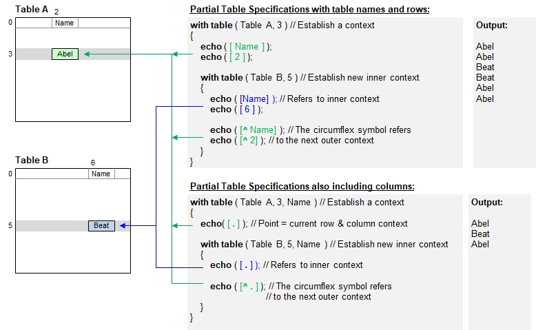

Introduction
B4P supports nested table contexts and facilitates working with 2 tables directly with miminum coding effortsa.
In order to access a table using the next outer context, use the deep symbol (circumflex ^) after the opening bracket.
If 3 or more nested table contextsare specified, then use additional ^ symbols to reference the further outer contexts.
The row() and col() functions also provide one parameter which can be used to reference the next or further outer context.
Visualized example:

Example
table initialize( master, { { Name, Score }, { Angela, 10 }, { Bob, 12 }, { Charlotte, 14 }, { Dan, 10 } } );
table initialize( new scores,
{ { Name, Score },
{ Bob, 3 }, { Angela, 5}, { Dan, 1 }, { Bob, 5 }, { Charlotte, 2 }, { Bob, 1 }, { Angela, 2 } } );
echo("Master table:"); table list ( master );
echo("New scores to add:"); table list( new scores );
table process( master,
table process selected rows( new scores, [Name] == [^Name], [^Score] += [Score] ) );
echo("Updated master table:"); table list( master );
echo("Demonstrate row numbers: ");
with table( master, 1 ) with table ( new scores, 3 )
{
echo( [Name], " in 'new scores' row ", row() );
echo( [^Name], " in 'master' row ", row(1) );
}Output
Master table:
0 : Name | Score
1 : Angela | 10
2 : Bob | 12
3 : Charlotte | 14
4 : Dan | 10
New scores to add:
0 : Name | Score
1 : Bob | 3
2 : Angela | 5
3 : Dan | 1
4 : Bob | 5
5 : Charlotte | 2
6 : Bob | 1
7 : Angela | 2
Updated master table:
0 : Name | Score
1 : Angela | 17
2 : Bob | 21
3 : Charlotte | 16
4 : Dan | 11
Demonstrate row numbers:
Dan in 'new scores' row 3
Angela in 'master' row 1
Specifying Current Columns
At present, this symbol cannot be used to sepecify current columns in superior tables like '^.'. Please use the function col() with a non-zero parameter instead, e.g. [^col(1)] to get current row and current column of the superior table. See the example below.
Example
table initialize( t1, { { Name, Score }, { Angela, 10 }, { Bob, 12 } } );
table initialize( t2, { { Name, Town }, { Bob, Denver }, { Angela, Chicago }, { Dan, Albany } } );
with table( t1, 2, Name )
{
echo("From t1: ", [.] ); // Bob
with table( t2, 3, Town )
{
echo("Name in t2: ", [Name], " and t1: ", [^Name] ); // Dan, Bob
echo;
echo("From t2: ", [.] ); // Albany
echo("From t1: ", [^col(1)] ); // Bob (Note: [^.] would access t1, but use column number in t2)
echo;
echo("t2: Row: ", row(), " Column: ", col() ); // Row 3, column 1
echo("t1: Row: ", row(1), " Column: ", col(1) ); // Row 2, column 0
}
}Output:Output
From t1: Bob
Name in t2: Dan and t1: Bob
From t2: Albany
From t1: Bob
t2: Row: 3 Column: 1
t1: Row: 2 Column: 0